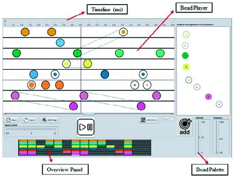
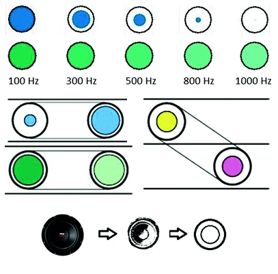

2016, Design and Evaluation of an Authoring Tool and Notation System for Vibrotactile Composition
Vibrotactile stimulation can be used as a substitute for audio or visual stimulation for people who are deaf or blind. Artists have become interested in creating vibrotactile art as a new and exciting art form. In order to do this, new tools and a notation must be developed and evaluated that support the creation and experience of vibration on the skin. The Beadbox tool, along with a supporting notation system, was developed for the purpose of composing vibrotactile art.
1. System Overview of the Beadbox
The purpose of the Beadbox is to facilitate the creation of vibrotactile interactive art by controlling four essential variables: (1) frequency, (2) intensity, (3) spatial distribution of the signal among the vibrotactile actuators and (4) temporal information. The Beadbox proposes a unique notation system in order to allow users to control these variables and produce these patterns. Users can record a vibrotactile composition, play the piece while they are creating, edit the file, and save the finished piece.
Each Bead can be created from the Bead Palette and adjusted with a corresponding frequency and intensity slider. The created Bead can be placed on the BeadPlayer timeline. Each track of the BeadPlayer represents an output contactor, with specific colour hue.

Figure 1. An overview of the Beadbox displaying the Timeline, Bead Player, Overview Panel, and Bead Palette.
2. Vibrotactile Notation
To build up a notation system, a basic information unit must be defined. The basic unit in this system is called a "Bead". A Bead is developed to deliver essential information for vibrotactile art composition. A Bead then is represented by two concentric circles where the outermost circle is described by darker, heavier line.
Brightness was assigned to visualize the frequency level of vibrotactile stimuli. The intensity coefficient scales linearly in the Beadbox from 0 to 100. The diameter of the inner circle of the Bead then represents amplitude whereby a smaller diameter would represent the lower intensity coefficient level. To control the timing of the note, the user can drag and drop the Bead in the desired location along the timeline.

Figure 2. Sample Beads metaphor (botom), and demonstrating duration changes from low to high frequency, track transitions, and intensity shifts.
3. User Study and Methodology
A user study was carried out to evaluate the general usability of the Beadbox as a vibrotactile pattern authoring tool. Thirty people (20 female, 10 male) participated in the Beadbox user study. For the study, participants completed a pre-study questionnaire, demonstration tutorial, a main composition session using Beadbox, and a post-study questionnaire. In the main composition session, participants were asked to create a 5 to 10 second vibrotactile composition using the system. The post-questionnaire consisted of ten questions from the System Usability Scale (SUS), four questions regarding the interface and controls of each vibrotactile factor, and five open ended questions.
4. Results and Discussion
The main findings in the evaluation suggest that the Beadbox has a good usability with a low learning barrier, has direct functionality, and aesthetically pleasing. Responses to the three learnability questions showed that participants thought Beadbox was easy to learn. For functionality, participants also agreed that the Beadbox was easy to use and that is was not unnecessarily complex. Participants liked that they could interact with a variety of simple shapes and colours. Some participants mentioned that the circular-shaped design of a Bead and its simple layout on the Beadplayer improved learnability of the Beadbox.